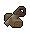
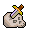

")
Falador
Einfache Aufgaben
Aufgabe |
Angefangenes / Beendetes Abenteuer |
Sonstige Voraussetzungen |
|
Kauf ein Landwirtschafts-Amulett bei Sarah am Bauernhof nördlich von Port Sarim |
Keine | Keine | |
Kauf bei der Wirtin der Taverne zur aufgehenden Sonne ein Bier, das deine Werte verbessert |
Keine | Keine | |
Kauf in Waynes Ketten ein Schwarz-Kettenhemd und zieh es im Laden an |
Keine | 10 |
|
Klettere das Schloss der Weißen Ritter hoch |
Keine | Keine | |
Erfahr bei Sir Renitee etwas über dein Familienwappen |
Keine | 16  | |
Betritt den Maulwurfsbau unter dem Park in Falador |
Keine | Keine | |
Füttere Ridgeley, das Haustier des Friseurs |
Keine | Keine | |
Füll einen Eimer aus der Pumpe nördlich der westlichen Bank in Falador |
Keine | Keine | |
Heil einen Elementar-Magier, indem du einen entsprechenden Elementar-Zauber auf ihn sprichst (Luft, Wasser, Erde oder Feuer) |
Keine | Keine | |
Töte eine Ente im Park von Falador |
Keine | Keine | |
Besieg einen Wegelagerer an der Straße südlich von Falador |
Keine | Keine | |
Stell eine Geistes-Tiara her |
Keine | Keine | |
Sprich mit Party Peter im Partyraum. |
Keine | Keine | |
Lade deine Gebetspunkte am Altar südwestlich von Port Sarim auf |
Keine | Keine | |
Nimm das Boot nach Entrana |
Keine | Keine |
Klickt in den unten stehenden Kasten, um die Belohnungen für das Erledigen der einfachen Aufgaben zu sehen:
Achtung: Belohnungen werden verraten Um die Belohnungen zu sehen, markiert einfach den unten stehenden Kasten mit eurem Mauszeiger, um den darin versteckten Text sichtbar zu machen Belohnungen anzeigen...
| Falador-Schild | Beim Tragen: Bedient den Schild, um 25 % eurer Gebetspunkte einmal täglich wieder aufzuladen Bedient den Schild, um eine neue Geste auszuführen Eine Lampe, die 1.000 EP in einer von euch gewählten Fertigkeit verleiht |
Mittelschwere Aufgaben
Aufgabe |
Angefangenes / Beendetes Abenteuer |
Sonstige Voraussetzungen | |
Stell am Webstuhl beim Bauernhof nördlich von Port Sarim einen Früchtekorb her |
Keine | 36 |
|
Krabble unter die südliche Mauer von Falador |
Keine | 26 |
|
Benutz einen Wurfanker, um auf die nördliche Mauer von Falador zu kommen, und spring dann runter |
Keine | 11 19 37 |
|
Verbessere dein Ansehen bei den Weißen Rittern, indem du einen Schwarzen Ritter besiegst |
Die Fahndung | Keine | |
Besieg einen Eis-Riesen im Eisverlies von Asgarnien |
Keine | Keine | |
Zünde im Laden des Chemikers eine Blendlaterne an |
Keine | 49 |
|
Bestiehl eine Wache von Falador |
Keine | 40 | |
Benutz eine Vogelscheuche, um Mais zu schützen, den du auf der Parzelle nördlich von Port Sarim züchtest |
Keine | 23 |
|
Salutier Sir Tiffy zu, wenn du einen kompletten Satz Novizen-Rüstzeug trägst |
Nachwuchsförderung | 20 10 |
|
Schmiede ein paar Blurit-Wurfarme auf Thurgos Amboss |
Das Schwert des Ritters | 10 13 |
|
Reis kostenlos von Port Sarim zu Musas Idyll (mit Charos' Hilfe) |
Der Garten der Stille | Keine | |
Besuch die Rattengruben von Port Sarim |
Die Rattenfänger | Keine |
Klickt in den unten stehenden Kasten, um die Belohnungen für das Erledigen der mittelschweren Aufgaben zu sehen:
Achtung: Belohnungen werden verraten Um die Belohnungen zu sehen, markiert einfach den unten stehenden Kasten mit eurem Mauszeiger, um den darin versteckten Text sichtbar zu machen Belohnungen anzeigen...
| Verbesserter Falador-Schild | Zusätzlich zur Belohnung der einfachen Aufgaben, beim Tragen: Bedient den Schild, um 50 % eurer Gebetspunkte einmal täglich wieder aufzuladen 10 % mehr EP bei der Benutzung der Parzellen nördlich von Port Sarim Eine Lampe, die 5.000 EP in einer von euch gewählten Fertigkeit verleiht |
Schwere Aufgaben
Aufgabe |
Angefangenes / Beendetes Abenteuer |
Sonstige Voraussetzungen |
|
Steig den Turm der dunklen Magier herunter, wenn du einen vollen Satz Prediger-Rüstzeug trägst |
Die Schneckenbedrohung | 30 20 |
|
Ändere dein Familienwappen zu einem Saradomin-Symbol |
Keine | 70 16 |
|
Stell 140 oder mehr Geistes-Runen gleichzeitig her |
Das Runenmysterium | 56 |
|
Fäll einen Eiben- oder Magiebaum, den du im Park von Falador gepflanzt hast |
Keine | 60 60 |
|
Benutz einen Feen-Ring, um zu dem Feen-Ring in der Schlammspringer-Bucht zu reisen |
Ein Feenmärchen II | Keine | |
Färb einen Umhang mit Färbemittel von Betty in Port Sarim rosa |
Die Hand im Sand | Keine | |
Betritt die Gilde der Bergarbeiter |
Keine | 60 |
|
Besieg einen Schloger in der Schlammspringer-Bucht |
Keine | 32  | |
Besieg einen Skelett-Lindwurm im Eisverlies von Asgarnien |
Empfohlen: Die Elementarwerkstatt I | 72 | |
Beschwör einen Ibis im Fischladen von Port Sarim herauf |
Keine | 56 |
Klickt in den unten stehenden Kasten, um die Belohnungen für das Erledigen der schweren Aufgaben zu sehen:
Achtung: Belohnungen werden verraten Um die Belohnungen zu sehen, markiert einfach den unten stehenden Kasten mit eurem Mauszeiger, um den darin versteckten Text sichtbar zu machen Belohnungen anzeigen...
| Verbesserter Falador-Schild | Zusätzlich zur Belohnung der einfachen und mittelschweren Aufgaben, beim Tragen: Bedient den Schild, um alle eure Gebetspunkte einmal täglich wieder aufzuladen Erhaltet Madonnen-Lilien-Samen, wenn ihr mit Wyson Maulwurfshäute tauscht Eine Lampe, die 10.000 EP in einer von euch gewählten Fertigkeit verleiht |
Um weitere Informationen über die verschiedenen Gebiete in und um Falador zu erhalten, besucht bitte die Seite mit dem entsprechenden Reiseführer.

Weitere Artikel in Aufgabenliste
|
|
|
Weiterführende Informationen Wenn euch dieser Artikel nicht weitergeholfen hat, könnt ihr in den folgenden Kapiteln der RuneScape-Webseite mehr Informationen finden:
|
|